Objectif du cours
Renforcer les bases mathématiques appliquées à la physique, avec un focus sur l’intuition, la rigueur et les applications concrètes. Ce cours vise à préparer les élèves à mieux aborder les enseignements scientifiques du supérieur.
Homogénéités des équations (3 séances)
La démarche scientifique
-
La démarche scientifique: La première partie des démarche scientifique est composée par des observations et les expériences. Cela correspond à la phase empirique des sciences. La deuxième partie est la modélisation et réalisation de calcule, correspondant à la phase théorique des sciences.
-
L'objective d'une théorie scientifique: Comme son principale objective, une théorie doit être capable d'expliquer un phénomène naturel sur la base de ses postulats et théorèmes, faire des prédictions par les biais de calcules.
-
Réfutabilité d'une théorie scientifique: Une théorie scientifique n’est pas simplement vraie ou fausse. La théorie doit être capable d’expliquer les phénomènes avec une certaine marge d’erreur.
-
Intelligibilités des résultats: La théorie ou l'expérience doit être reproductible et vérifiable par d'autres scientifiques les résultats doivent être rapportés dans un langage scientifique.
-
Intuition ou raison? En science, le langage courant n'a pas d'importance : je pense que..., à mon avis..., vos explications doivent être basées sur la démarche scientifique ex: d'après les travaux scientifiques des auteurs...
Grandeurs physiques, unités du SI
Ces sont des caractéristiques mesurables d'un phénomène, d'un corps ou d'une substance. Chaque grandeur est exprimée dans une unité appropriée.
Définition: Une grandeur physique est une propriété quantifiable de l’espace-temps, de la matière ou d’un phénomène.
-
Grandeur scalaire: masse, température, temps, énergie, pression, etc...
Ex: La masse peut être mesuré en kg. \(M=(70\pm 1 )\, {\rm kg}\)Figure 1. La masse d'un corps -
Les grandeurs physiques vectorielle: vitesse, accélération, force, quantité de mouvement, moment cinétique, champs électrique, champs magnétique, etc..
La vitesse du vent est une grandeur physique vectorielle: un vecteur dont la norme est en m/s, la direction et le sens sont ceux du vent.\[\begin{gathered}\vec{v}=\left((30\pm 2)\vec{e}_x+(-20\pm 2)\vec{e}_y+(4\pm 2)\vec{e}_z\right)~{\rm m/s}\end{gathered}\](1)Figure 2. Vitesse du vent -
Les grandeurs tensorielle: Moment d'inertie, tenseur de stress,
La répartition de la masse dans un objet en rotation est appelée moment d’inertie. Il s'agit d'une quantité tensorielle qui peut être mesuré en kg m².\[\begin{gathered}I=\begin{bmatrix} x_1 & x_2 & x_3\\ y_1 & y_2 & y_3 \\ z_1 & z_2 & z_3 \end{bmatrix}~{\rm kg.m^2}\end{gathered}\](2)
Généralement les grandeurs physiques sont présentées comme
où \(G\) c'est la grandeur physique, \(g\) la valeur numérique et \(\Delta g\) son incertitude.
-
Ne commettez pas l'erreur de penser que seul \(g\) est important. \(g\) sans l'unité ne veut rien dire (résultat invalide sauf, pour des grandeurs sans unités (p.ex. indice optique d’un milieu, etc)
-
Dans le cas d’une mesure, \(g\) sans l’erreur \(\Delta g\) ne permet pas de découvrir comment la quantité a été mesurée (résultat invalide)
Exemple: Quelle que soit la taille « réelle » d’un objet, la plupart des informations que nous pouvons extraire dépendent de l’instrument utilisé pour mesurer la taille. Nous supposons que nous utilisons un ruban pour mesuré la taille d'un morceau de bois
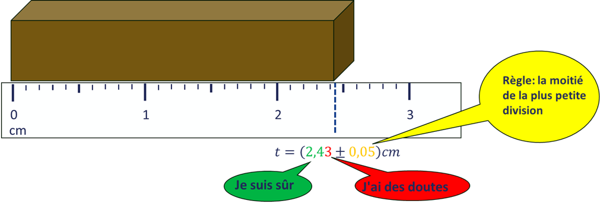
Interdit de faire: oublier ou mélanger des unités
-
Vous mesurez un volume \(V\) à l’aide d’une éprouvette et vous notez sur votre compte-rendu \(V\)=10. Dix quoi? Litres? m\(^3\)? cm\(^3\)? Ne pas spécifier les unités ici rend le résultat inutilisable. Quelqu’un qui devra ultérieurement reprendre vos résultats sera incapable d’interpréter cette information
-
Vous effectuez une application numérique pour calculer une vitesse moyenne à partir de la relation \(v=D/T\). On vous donne \(D\)=10 m et \(T\)=1 s et vous concluez \(v\)=10 km/h. Perdu, la valeur numérique est bonne mais l’unité est erronée, ce sont des m/s et non des km/h.
-
Vous calculer une tension à l’aide de la loi d’Ohm: \(V=R\,I\). Vous obtenez \(V\)=10 A. Perdu, la tension se mesure en Volts.
Ordres de grandeur en physique
Les ordres de grandeur permettent d'estimer la taille, la durée, la masse ou toute autre quantité physique caractéristique d’un phénomène ou d’un objet, sans entrer dans les détails précis des calculs. Ils donnent une idée de l’échelle pertinente dans un contexte donné.
Définition
Un ordre de grandeur d’une quantité est une approximation de cette quantité à la puissance de dix la plus proche. Cela revient à dire qu’on exprime une grandeur sous la forme :
Cette approximation est utile pour comparer rapidement des quantités ou estimer la validité d’un résultat.
Exemples classiques
-
Taille d’un atome : \(10^{-10}\) m
-
Taille d’un être humain : \(10^{0}\) m
-
Rayon de la Terre : \(6,4 \times 10^6\) m \(\approx 10^7\) m
-
Distance Terre-Soleil (1 ua) : \(1,5 \times 10^{11}\) m \(\approx 10^{11}\) m
-
Durée d’un battement de cœur : \(\sim 1\) s
-
Durée de la lumière pour traverser un atome : \(\sim 10^{-18}\) s
-
Masse d’un électron : \(9,1 \times 10^{-31}\) kg \(\approx 10^{-30}\) kg
-
Masse d’un humain : \(\sim 10^{2}\) kg
-
Masse de la Terre : \(6 \times 10^{24}\) kg
Utilité des ordres de grandeur
-
Vérification de cohérence : Un résultat dont l’ordre de grandeur est absurde peut signaler une erreur de raisonnement ou de calcul.
-
Simplification : Permet de simplifier les calculs dans les modèles ou les raisonnements sans perte significative de précision.
-
Hiérarchisation : Aide à identifier les effets dominants dans un système physique.
Notation scientifique
Pour exprimer les ordres de grandeur, on utilise la notation scientifique :
Exemple : \(6,02 \times 10^{23}\) (constante d’Avogadro)
Échelle logarithmique
Les ordres de grandeur s’expriment souvent en échelle logarithmique, ce qui facilite la représentation de données très dispersées, par exemple sur des graphes semi-logarithmiques ou logarithmiques.
Règles pour les arrondis
L’arrondi d’un nombre à une précision souhaitée se détermine à partir du chiffre suivant, s’il existe.
-
Arrondi par défaut: si le chiffre suivant la précision souhaitée est 0, 1 ,2, 3, 4, on arrondit à la valeur inférieure en tronquant à la précision souhaitée.
-
Arrondi par excès -- si le chiffre suivant la précision souhaitée est 5, 6, 7, 8, 9, on arrondit à la valeur supérieure en tronquant à la précision souhaitée.
Exemples:
-
arrondir \(\pi\) On donne \(\pi\simeq\)3,14159… La valeur de \(\pi\) arrondie au millième est 3,142. Il s’agit dans ce cas d’un arrondi par excès. La valeur de \(\pi\) arrondie à l’unité est 3, par défaut (\(\pi\simeq\)3, très pratique pour trouver des ordres de grandeurs).
-
Poids d'un bagage Supposons qu’à l’aéroport vos bagages pèsent P=23,4 Kg et la limite est de 23 kg. Dans ce cas, il est courant d'utiliser l'arrondi par défaut \(P\simeq \)23 Kg. Mais si la mesure est de 23,8 kg, le contrôleur pourrait alors utiliser un arrondi par excès \(P\simeq\) 24 Kg.
Formats d’écritures d’un résultat numérique
-
\(\blacktriangleright\) Écriture décimale}} : on écrit le résultat sous sa forme décimale usuelle en conservant le nombre de chiffres significatifs adéquat et en arrondissant si nécessaire.
-
\(\blacktriangleright\) Écriture scientifique}} : on écrit le résultat sous la forme « \(n,m \times 10^p\) »
où \(n\) est un entier compris entre 1 et 9 (inclus), \(m\) les décimales significatives et \(p\) un exposant entier (positif ou négatif).
Exemples: \(0,052 = 5,2 \times 10^{-2}\) ; \(29,6 = 2,96 \times 10^1\)
-
\(\blacktriangleright\) Écriture ingénieur}} : on écrit le résultat sous la forme « \(n,m \times 10^{3p}\) »
\(p\) est un entier, ce qui permet d’utiliser les préfixes des multiples et sous-multiples. On ajuste la valeur de \(n\) en fonction de l’exposant obtenu.
Exemples: \(0,052 \, \text{A} = 52 \times 10^{-3} \, \text{A} = 52 \, \text{mA}\) ; \(1,02 \times 10^7 \, \text{V} = 10,2 \times 10^6 \, \text{V} = 10,2 \, \text{MV}\)
Règles pour les chiffres significatifs
Les chiffres significatifs permettent d'indiquer la précision d'une mesure ou d'un résultat. Voici les règles principales à connaître :
-
Tous les chiffres non nuls sont significatifs.
Exemple : 42,7 a 3 chiffres significatifs.
-
Les zéros situés entre des chiffres significatifs sont significatifs.
Exemple : 302 a 3 chiffres significatifs.
-
Les zéros à gauche du premier chiffre non nul ne sont pas significatifs.
Exemple : 0,0045 a 2 chiffres significatifs.
-
Les zéros à droite du dernier chiffre non nul sont significatifs si une virgule est présente.
Exemples :
-
50,0 a 3 chiffres significatifs.
-
2,300 a 4 chiffres significatifs.
-
-
En notation scientifique, tous les chiffres de la mantisse sont significatifs.
Exemple : \(2,30 \times 10^3\) a 3 chiffres significatifs.
Règles pour les calculs :
-
Addition / soustraction : le résultat est arrondi au même nombre de décimales que la donnée la moins précise.
Exemple : \(12,3 + 4,56 = 16,86 \rightarrow 16,9\)
-
Multiplication / division : le résultat a autant de chiffres significatifs que la donnée qui en a le moins.
Exemple : \(3,2 \times 2,51 = 8,032 \rightarrow 8,0\)
Le système international des unités et les grandeurs de base
-
Qu'est-ce qu'une unité de mesure?
Une unité est une quantité standardisée utilisée pour mesurer une grandeur physique (comme la longueur, le temps, la masse…). Par exemple, on mesure une distance en mètres, un temps en secondes, etc.
En physique, mesurer signifie attribuer une valeur numérique à une grandeur physique en la comparant à une référence appelée unité. Le Système international d’unités (SI) repose sur un ensemble minimal de 7 unités de base, choisies pour représenter des grandeurs fondamentales qui sont :
-
universelles et indépendantes de toute expérience spécifique ;
-
mesurables avec une grande précision ;
-
suffisantes pour exprimer toutes les autres grandeurs physiques par combinaison.
-
-
Le Système international d'unités (SI)
Le Système international (SI) est le système de mesure officiel utilisé en science et dans la majorité des pays. Il repose sur 7 unités de base à partir desquelles on peut définir toutes les autres unités (appelées unités dérivées).
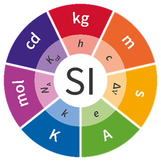
Figure 4. Il définit sept grandeurs fondamentales, leur échelon de référence (l’unité) et un symbole pour l’unité. Important: toutes les autres unités ses exprimer par ces sept unités de base (les unités composées) Les 7 unités de base du Système international (SI). Grandeur physique Symbole Unité de base (nom) Symbole de l’unité longueur \(l\) mètre m masse \(m\) kilogramme kg temps \(t\) seconde s intensité électrique \(I\) ampère A température thermodynamique \(T\) kelvin K quantité de matière \(n\) mole mol intensité lumineuse \(I_v\) candela cd Ces unités de base sont associées à des dimensions physiques fondamentales, qui décrivent la nature de la grandeur mesurée, indépendamment de l’unité choisie.
Les 7 dimensions physiques fondamentales
Les dimensions fondamentales représentent les catégories essentielles à partir desquelles toutes les autres grandeurs peuvent être construites. Elles sont notées par des symboles conventionnels :
| Grandeur physique | Dimension | Unité SI | Description |
|---|---|---|---|
| Longueur | \([L]\) | mètre (m) | Distance dans l’espace |
| Temps | \([T]\) | seconde (s) | Durée d’un phénomène |
| Masse | \([M]\) | kilogramme (kg) | Inertie d’un corps |
| Intensité électrique | \([I]\) | ampère (A) | Flux de charges électriques |
| Température thermodynamique | \([\Theta]\) | kelvin (K) | Niveau d’agitation thermique |
| Quantité de matière | \([N]\) | mole (mol) | Nombre d’entités élémentaires |
| Intensité lumineuse | \([J]\) | candela (cd) | Flux lumineux perçu |
Les unités dérivées
Ses unités sont composées par les unités de base. Quelque soit l'unité physique elle peut toujours être réécrite selon les 7 unités de base
| Grandeur | Formule SI | Unité dérivée (nom) | Symbole |
|---|---|---|---|
| Vitesse | \(\text{m}/\text{s}\) | mètre par seconde | m/s |
| Accélération | \(\text{m}/\text{s}^2\) | mètre par seconde carrée | m/s² |
| Force | \(\text{kg} \cdot \text{m}/\text{s}^2\) | newton | N |
| Énergie / Travail | \(\text{N} \cdot \text{m}\) | joule | J |
| Puissance | \(\text{J}/\text{s}\) | watt | W |
| Pression | \(\text{N}/\text{m}^2\) | pascal | Pa |
Les règles pour les dimensions
Règle 1 -- On ne peut ajouter ou soustraire que des unités identiques.
Règle 2 -- Les deux membres d’une égalité doivent être de mêmes unités :
Règle 3 -- L’unité de l’inverse d’une grandeur est égale à l’inverse de l’unité de la grandeur :
Règle 4 -- L’unité d’un produit (ou quotient) est le produit (ou quotient) des unités :
Règle 5 -- Les arguments et les images des fonctions mathématiques sont sans unités ; les nombres réels sont sans unités.
Exemples : \(\sin(x)\), \(\ln(x)\), \(\exp(x)\), où \(x\) est un nombre réel.
Règle 6 -- Pour une dérivée, on a :
Les règles 2 et 5 permettent de vérifier la possible validité d’une expression / équation
Exercices de révision : Les règles pour les dimensions
-
Addition et soustraction d'unités -- Règle 1
Pour chaque expression suivante, indique si l'opération est possible du point de vue des unités. Justifie votre réponse.-
\( 3\,\text{m} + 5\,\text{s} \)
-
\( 7\,\text{J} - 2\,\text{kg}\cdot\text{m}^2/\text{s}^2 \)
-
\( 100\,\text{cm} + 2\,\text{m} \)
-
\( v + at \), avec \(v\) une vitesse, \(a\) une accélération, \(t\) un temps.
-
-
Homogénéité des équations -- Règle 2
Vérifie si chaque équation ci-dessous est homogène, c’est-à-dire si les deux membres ont la même unité. Justifie.
-
\( x = vt + \frac{1}{2}at^2 \)
-
\( F = ma + v \)
-
\( E = \frac{1}{2}mv^2 + mgh \)
-
\( T = 2\pi \sqrt{\dfrac{L}{g}} \), période d’un pendule simple
-
-
Inverses d’unités -- Règle 3
Détermine l’unité des grandeurs suivantes :
-
\( \dfrac{1}{T} \), avec \(T\) en secondes
-
\( \dfrac{1}{\rho} \), avec \(\rho\) en kg/m\(^3\)
-
\( \dfrac{1}{R} \), avec \(R\) en ohms (\(\Omega\))
-
-
Produit et quotient d’unités -- Règle 4
Calcule les unités des expressions suivantes :-
\( P = F \cdot v \), puissance (force × vitesse)
-
\( a = \dfrac{F}{m} \)
-
\( \eta = \dfrac{F/A}{v} \), viscosité dynamique
-
\( E = \dfrac{hc}{\lambda} \), avec \(h\) en J\(\cdot\)s, \(c\) en m/s, \(\lambda\) en m
-
-
Fonctions sans unités -- Règle 5
Dans les expressions suivantes, détermine si elles sont valides du point de vue des unités. Si non, propose une correction.-
\( \sin(t) \), avec \(t\) en secondes
-
\( \ln(p/p_0) \), où \(p\) et \(p_0\) sont des pressions en Pa
-
\( \exp(x/L) \), avec \(x\) et \(L\) des longueurs
-
\( \ln(E) \), avec \(E\) en joules
-
-
Unité des dérivées -- Règle 6
Détermine l’unité des dérivées suivantes :-
\( \dfrac{d\theta}{dt} \), avec \(\theta\) un angle sans unité et \(t\) en secondes
-
\( \dfrac{d^2x}{dt^2} \), avec \(x\) en mètres
-
\( \dfrac{dV}{dT} \), avec \(V\) en m\(^3\) et \(T\) en kelvins
-
\( \dfrac{dI}{dV} \), avec \(I\) en ampères et \(V\) en volts
-
-
Détection d’erreurs dimensionnelles
Pour chaque expression suivante, détectez les éventuelles erreurs dimensionnelles. Corrigez-les si nécessaire.-
\( v = \sqrt{2a + x} \), avec \(a\) en m/s\(^2\) et \(x\) en m
-
\( E = mc + T \), avec \(c\) en m/s et \(T\) en K
-
\( P = \dfrac{F \cdot x}{t} \), avec \(F\) une force, \(x\) une distance, \(t\) un temps
-
Expression de la dimension d’une grandeur
Soit \([G]\) une grandeur quelconque, alors la dimension de \([G]\) s’exprime toujours sous la forme:
où \(a, b, c, d, e, f\) et \(g\) sont des exposants réels.
Exemple: si \(v\) est une vitesse alors \([v]=[L].[T]^{-1}\).
Une grandeur purement numérique est sans dimension, c’est toujours le cas des grandeurs physique définies comme un rapport de deux grandeurs de mêmes unités. Dans ce cas, la grandeur est dite «adimensionnée». Exemple: la densité d’un liquide est définie comme le rapport de la masse volumique \(V\) du liquide sur la masse volumique de l’eau \(\rho_0\). C’est un coefficient sans unités. Dans ce cas on écrit \([G]=1\).
Homogénéité des équations
Une équation physique est dite homogène si tous ses termes possèdent les mêmes dimensions (ou unités). Cela signifie que l’on peut, en théorie, additionner ou soustraire les termes de l’équation.
Par exemple, l'équation de la cinématique :
est homogène car tous les termes ont la dimension d'une longueur \(\left[ L \right]\).
L’homogénéité est une condition nécessaire (mais non suffisante) pour qu’une équation soit physiquement correcte. Elle permet d’éviter certaines erreurs de raisonnement ou de calcul.
Remarque : Une équation homogène n'est pas nécessairement vraie, mais une équation non homogène est forcément fausse.
Méthode de base pour vérifier une équation
Pour tester l’homogénéité (et donc la plausibilité) d’une équation, on suit les étapes suivantes :
-
Identifier les grandeurs physiques présentes dans l’équation.
-
Exprimer la dimension de chaque grandeur en fonction des unités de base du Système International :
\[\begin{array}{ll} \text{Longueur} & [L] \\ \text{Temps} & [T] \\ \text{Masse} & [M] \\ \text{Température} & [\Theta] \\ \text{Courant électrique} & [I] \\ \text{Quantité de matière} & [N] \\ \text{Intensité lumineuse} & [J] \\ \end{array}\](14) -
Remplacer chaque terme de l’équation par sa dimension.
-
Vérifier que tous les termes ont la même dimension.
Exemple :
Vérifions l’homogénéité de la formule de l’énergie cinétique :
-
Masse : \([m] = [M]\)
-
Vitesse : \([v] = [L][T]^{-1}\) donc \([v^2] = [L^2][T]^{-2}\)
-
Donc : \([E] = [M][L^2][T]^{-2}\)
On retrouve bien la dimension d'une énergie, ce qui confirme que l'équation est homogène.
Exemples classiques
Chute libre
Loi de Newton
homogène.
Énergie cinétique
homogène.
Exercices de révision
-
Vérifier l'homogénéité de l'équation suivante : \(s = vt + \frac{1}{2}at^2\)
-
Vérifier si l'expression \(P = Fv + E\) est homogène (P : puissance, F : force, v : vitesse, E : énergie)
-
Trouver une erreur d'unité dans l'équation : \(T = 2\pi\sqrt{m/k}\) (indice : T : période, m : masse, k : constante de raideur)
Théorème de Vaschy-Buckingham/ Théorème de \(\Pi\)
Théorème (Vaschy-Buckingham). Soit un problème physique impliquant \(n\) grandeurs physiques indépendantes \(Q_1, Q_2, \dots, Q_n\), exprimées en fonction de \(p\) grandeurs fondamentales (ou unités de base), avec \(p < n\). S’il existe une relation de la forme
alors cette relation peut être réécrite sous la forme équivalente
où chaque \(\pi_k\) est une grandeur sans dimension (appelée groupe \(\pi\)), construite comme une combinaison monomiale des grandeurs physiques :
L'idée de ce théorème est de trouver les expressions de \(\pi_k\)
Exemple: Théorème de Pythagore
La célèbre relation de Pythagore des triangles rectangles peut facilement être déduite par l’analyse dimensionnelle.
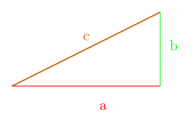
Exemple: L'équation d'état d'un gaz parfait
Nous connaissons l'équation d'état d'un gaz parfait
où \(P\) est la pression, \(V\) le volume, \(n\) le nombre de moles, \(R\) la constante fondamentale de la loi des gaz parfait et \(T\) la température dans l'échelle absolue. Imaginons que nous ne connaissons pas cette loi, mais nous savons que il doit exister une relation que relie \(P\), \(V\) et \(T\) dont les dimensions sont \([P]=[M]\,[L]^{-1}\,[T]^{-2}\), \([V]=[L]^3\), \([T]=[\Theta]\). On se pose la question suivante : Est-il possible d'avoir une combinaison de ces trois grandeurs de sorte à obtenir une grandeur adimensionnelle \([\pi]=1\) ?
Les exposants nous donnent un système d'équation du type
Regardez que ce système nous donne une solution triviale. Nous pouvons conclure que pour qu'on puisse obtenir une solution non triviale, nous avons besoin d'autres grandeurs physiques. Maintenant nous ajoutons la constante de la loi des gaz parfait \(R\) et le nombre de moles \(n\), dont les dimensions sont respectivement \([R]=[M]\,[L]^2\,[T]^{-2}\,[N]^{-1}\,[\Theta]^{-1}\) et \([n]=[N]\).
Nous obtenons un nouveau système d'équations
En remplacent les exposants dans l'éq.(28) nous obtenons
Prenons alors la racine de \(\alpha\) nous obtenons
où \(\pi\) c'est un coefficient sans dimensions et dans ce cas il vaut l'unité.
Problème guidé: Némesis et la propulsion plasma
Contexte intergalactique sur la planète \'Eritro, les lois de la physique ressemblent à celles de la Terre : les grandeurs fondamentales sont la masse \(M\), la longueur \(L\) et le temps \(T\).
Le super-héros local, Némesis, utilise un moteur dorsal à plasma qui lui permet de voler à très grande vitesse. Les scientifiques éritroniens pensent que la vitesse finale \(v\) atteinte par Némesis dépend de:
-
la puissance du moteur \(P\) \, [P] = \([M] [L]^2 [T]^{-3}\)
-
la masse de Némesis \(m\) \, [m] = \([M]\)
-
la densité d'énergie du carburant \(\rho \quad [\rho] = [M] [L]^{-1} [T]^{-2}\)
Ils supposent donc une relation de la forme :
Votre mission
À l'aide du théorème de Vaschy-Buckingham :
-
Déterminez le nombre de groupes sans dimension ({ \(\pi\)-groupes}) que l'on peut former.
-
Construisez ces groupes sans dimension.
-
En déduisez une expression de la vitesse \(v\) à un facteur numérique près.
-
Donnez une interprétation physique (intuitive) du résultat.
Indices pour les super-héros
-
Le théorème de Buckingham-Vaschy vous indique qu’il suffit d’utiliser les dimensions pour établir une relation entre les grandeurs.
-
Vous pouvez chercher des combinaisons \(\pi = v^a P^b m^c \rho^d\) sans dimension.
Facultatif : Extension de mission
-
Que se passerait-il si Némesis changeait de carburant avec une autre densité d’énergie ?
-
Peut-on estimer la vitesse maximale qu’un humain atteindrait avec la même technologie ?
Corrigé
Étape 1 : Analyse dimensionnelle des variables
Il y a 4 grandeurs et 3 dimensions fondamentales (\([M]\), \([L]\), \([T]\)) \(\Rightarrow \) 1 groupe sans dimension.
Étape 2 : Construction du groupe sans dimension \(\pi\)
On cherche :
On écrit les dimensions :
On impose que chaque exposant soit nul :
On résout ce système (par exemple en posant \(b=1\)) :
Étape 3 : Expression de la vitesse
Le groupe sans dimension est donc :
On isole \(v\) :
Étape 4 : Interprétation
-
Plus la puissance du moteur est grande, plus la vitesse est grande.
-
Plus la masse de Némesis est importante, plus il est difficile d’atteindre une grande vitesse (effet quadratique).
-
Plus la densité d’énergie du carburant est élevée, plus la vitesse augmente.
Exercices supplémentaires
Exercice 1 : La période d’un pendule simple
On cherche la période \(T\) d’un pendule simple. On suppose qu’elle dépend uniquement de :
-
la longueur du fil \(\ell\) \([L]\)
-
l’accélération gravitationnelle \(g\) \([L T^{-2}]\)
Objectif : Utilisez le théorème de Vaschy-Buckingham pour retrouver la loi donnant la période \(T\).
Exercice 2 : Vitesse d’écoulement d’un fluide dans un tuyau
La vitesse moyenne \(v\) d’un fluide dans un tuyau dépend de :
-
la pression \(\Delta P\) appliquée entre les extrémités \([M L^{-1} T^{-2}]\)
-
le rayon du tuyau \(R\) \([L]\)
-
la viscosité dynamique du fluide \(\eta\) \([M L^{-1} T^{-1}]\)
Objectif : Déterminez la dépendance de \(v\) avec ces grandeurs.
Exercice 3 : Force de traînée sur un objet en chute libre
La force de traînée \(F\) exercée sur un objet se déplaçant dans un fluide dépend de :
-
la vitesse \(v\) de l’objet \([L T^{-1}]\)
-
la surface frontale \(A\) \([L^2]\)
-
la densité du fluide \(\rho\) \([M L^{-3}]\)
Objectif : Utilisez une analyse dimensionnelle pour trouver une expression de \(F\) en fonction de \(v\), \(A\) et \(\rho\).
Dérivées, intégrales et équations différentielles (2 séances)
Exemple : mouvement rectiligne
-
Position : \(x(t)\)
-
Vitesse : \(v(t) = \dv{x}{t}\)
-
Accélération : \(a(t) = \dv[2]{x}{t}\)
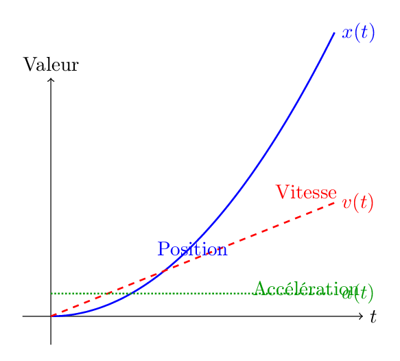
Dérivées
Les dérivées sont essentielles en physique pour modéliser des grandeurs dynamiques. Elles permettent d’exprimer rigoureusement des notions intuitives comme la vitesse ou l’accélération, et sont présentes dans toutes les lois fondamentales.
Passons en revue les dérivés. Une dérivée d'une fonction mathématique \(f(x)\) définie sur un intervalle de \(\mathbb{R}\) est définie par la limite d'un rapport
où \(\Delta x \) correspond à un intervalle de la variable indépendante \(x\). Elle correspond au taux de variation instantané de \(f\) à l’instant \(t_0\).
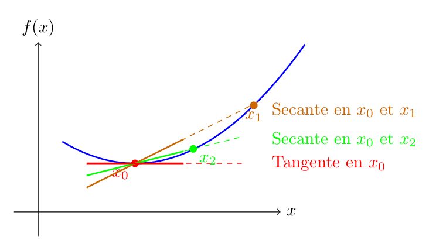
Exemples:
Étant donné \(f(x)=a\,x\) avec une constante \(a\), l'Eq. (41) nous donne
Si \(f(x)=a\,x^n\) où \(n\) est un entier, sa dérivée est donné par
Notez que le binôme de Newton a été utilisé pour exprimer le terme \((x+\Delta x)^n\)
Démontrez que:
Les propriétés des dérivées:
Étant donnés une fonction \(f(x)\) définie comme \(f:x\mapsto\mathbb{R}\) et une constante quelconque \(k\)
-
La dérivée d'une fonction constante est égal à zéro
\[\begin{gathered}\frac{dk}{dx}=0\end{gathered}\](46)quelque soit la constante \(k\).
-
La dérivée d'une fonction quelconque multipliée par une constante arbitraire \(k\) est égal a la constante multiplié par la dérivée de la fonction
\[\begin{gathered}\frac{d(k\,f(x))}{dx}=k\,\frac{df}{dx}\end{gathered}\](47) -
La dérivée est une opération linéaire
\[\begin{gathered}\frac{d}{dx}(f(x)+g(x))=\frac{df(x)}{dx}+\frac{dg(x)}{dx}\end{gathered}\](48) -
La dérivée du produit de deux fonctions est la somme du produit de la dérivée de chaque fonction à la fois. On suppose \(h(x)=f(x)\,g(x)\)
\[\begin{gathered}\frac{dh(x)}{dx}=\frac{df(x)}{dx}\,g(x)+f(x)\,\frac{dg(x)}{dx}\end{gathered}\](49) -
La règle de la chaîne. Étant donnée une fonction composé du type \(h(x)=f(g(x))=f\circ g\), la dérivée de \(h(x)\)
\[\begin{gathered}\frac{dh(x)}{dx}=h'=f'(g(x))g'(x)= \frac{df(g(x))}{dg}\frac{dg(x)}{dx} ~.\end{gathered}\](50)
Astuce: Les fonctions avec une puissance au dénominateur du type \(f(x)=\frac{b}{(a+x)^{\alpha}}\) peuvent s'écrire sous la forme \(f(x)=b\,(a+x)^{-\alpha}\) et sa dérivée est donnée par l'Eq(45).
Exercices de révision
Calculez les dérivés des fonctions ci-dessous (\(a\) et \(b\) sont des constantes)
-
\(f(x)=\frac{b}{x^2}\)
-
\( f(x)=a(1+x^2)\)
-
\(f(x)=\frac{a+x}{x^3}\)
-
\(f(x)=\frac{a+x}{(a^2-x^2)^2}\)
-
\(f(x)=(a+x)^2\,(b-x^3)\)
-
\(f(x)=(a+x)^2\,(b-x^3)^3\)
-
\(f(x)=\frac{(a+x)^2}{(a^2-x^2)}\)
-
\(f(x)=\frac{(a+x)}{(a^2-x^2)^2}(1+x)^b\)
Dérivées d'ordre supérieur
Définition
Soit \(f\) une fonction dérivable sur un intervalle \(I\). Sa dérivée seconde, notée \(f''(x)\) ou \(\dv[2]{f}{x}\), est la dérivée de sa dérivée première :
De même, on définit la dérivée d'ordre \(n\)} de \(f\) par récurrence :
Interprétation physique
Les dérivées d’ordre supérieur apparaissent naturellement en physique. Par exemple :
-
\(\dv{x}{t}\) : vitesse (1er dérivée de la position)
-
\(\dv[2]{x}{t}\) : accélération (2eme dérivée)
-
\(\dv[3]{x}{t}\) : coup de fouet (jerk) — utile dans les systèmes mécaniques sensibles
Exemples classiques
-
\(f(x) = x^4 \Rightarrow f'(x) = 4x^3,\ f''(x) = 12x^2,\ f^{(3)}(x) = 24x,\ f^{(4)}(x) = 24\)
-
\(f(x) = \cos(x) \Rightarrow f^{(n)}(x)\) suit un motif périodique : \(\cos, -\sin, -\cos, \sin, \dots\)
-
\(f(x) = e^{kx} \Rightarrow \forall n,\ f^{(n)}(x) = k^n e^{kx}\)
Exercices — Dérivées d’ordre supérieur
Calcul direct
Calculez les trois premières dérivées des fonctions suivantes :
-
\(f(x) = \sin(2x)\)
-
\(g(x) = \frac{1}{x}\)
-
\(h(x) = x^3 \ln(x)\)
Correction :
-
\(f'(x) = 2\cos(2x)\), \(f''(x) = -4\sin(2x)\), \(f^{(3)}(x) = -8\cos(2x)\)
-
\(g'(x) = -\frac{1}{x^2}\), \(g''(x) = \frac{2}{x^3}\), \(g^{(3)}(x) = -\frac{6}{x^4}\)
-
\(h'(x) = 3x^2\ln(x) + x^2\), etc. (produit de fonctions)
Fonction exponentielle
Soit \(f(x) = e^{2x}\).
-
Calculez \(f^{(n)}(x)\) pour \(n = 1,\ 2,\ 3\)
-
Donnez une expression générale de \(f^{(n)}(x)\)
Correction :
Interprétation physique
Un point matériel a pour position \(x(t) = t^4 - 4t^2 + 2\)
-
Déterminez la vitesse \(v(t)\), l’accélération \(a(t)\) et le coup de fouet \(j(t)\)
-
Donnez leur valeur à \(t = 1\)
-
Quelle est la signification physique d’un coup de fouet positif ?
Correction :
Dérivée d’ordre supérieur et tableau de signes
On donne la fonction \(f\) telle que :
-
\(f'(x) = 0\) pour \(x = 1,\ x = 4\)
-
\(f''(x) = 0\) pour \(x = 2\)
-
\(f^{(3)}(2) \neq 0\)
-
Quelles sont les natures possibles des points \(x = 1,\ 2,\ 4\) ?
-
Peut-on conclure que \(x = 2\) est un point d’inflexion ? Pourquoi ?
-
Donnez un exemple de fonction vérifiant ces conditions.
Indication : Si \(f''(2) = 0\) mais \(f^{(3)}(2) \neq 0\), alors \(x = 2\) est bien un point d'inflexion.
Quand la dérivée s’annule
Comme la dérivée représente le taux de variation de fonction autour d'une point \(x_0\), quand la dérivée d'une fonction est nulle, sa tangente est parallèle à l'axe \(x\). Dans ce cas, nous trouvons soit un point de minimum soit un point de maximum
Dans le cas où la dérivée est nulle dans tout le domaine cela implique que la fonction \(f(x)\) est une constante \(f(x)=cste\) par rapport à la variable indépendante \(x\).
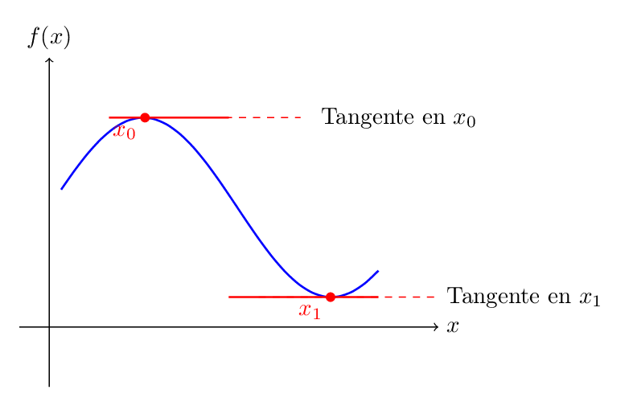
Pour savoir si un point de dérivée nulle est un max. ou un min. nous prenons la dérivée seconde et nous avalions son signe autour d'un point extrême. Si il s'agit d'un \(''+''\) c'est un point de min. , dans le cas de signe \(''-''\) c'est un point de max.
Quand la dérivée seconde d'une fonction s'annule, cela représente une condition nécessaire pour arriver à un point d'inflexion, qui se trouve entre deux points de max. et de min.
Pour avoir une condition suffisante il faut que la dérivée troisième existe et ne s'annule pas au point d'inflexion.
Fréquemment nous utilisons les dérivées nulles pour extrémiser une fonction et trouver ses points de max. et de min. locaux. De cette façon, nous pouvons dessiner l'allure des fonctions qui ont des formes analytiques compliquées. Une autre applications pratique est de trouver les points de stabilité des fonctions. Cette technique nous permet d'étudier le comportement local de phénomènes physiques.
Exercices sur les dérivées et l'allure des fonctions
Ces exercices ont pour but d’interpréter le rôle des dérivées premières et secondes pour tracer l’allure d’une fonction.
Étude à partir de \(f'(x)\) et \(f''(x)\)
On considère une fonction \(f\) définie sur \(\mathbb{R}\). On sait que :
-
Déterminer les intervalles de croissance et de décroissance.
-
Identifier les maximums et minimums locaux.
-
Identifier les intervalles de concavité (convexe / concave).
-
Donner une esquisse qualitative de la courbe de \(f\).
Correction guidée :
-
\(f\) est croissante sur \((-\infty, -2)\) et \((3, \infty)\) ; décroissante sur \((-2, 3)\)
-
Maximum local en \(x = -2\), minimum local en \(x = 3\)
-
\(f\) est concave (\(f'' < 0\)) sur \((-\infty, 0)\), convexe (\(f'' > 0\)) sur \((0, +\infty)\)
Points stationnaires et inflexion
Une fonction \(g\) est telle que :
-
\(g'(x) = 0\) pour \(x = -1,\ 2,\ 5\)
-
\(g''(-1) > 0\), \(g''(2) < 0\), \(g''(5) = 0\)
-
Quel est le comportement de \(g\) en \(x = -1\) ? Et en \(x = 2\) ?
-
Que peut-on dire de \(x = 5\) ?
-
Dessiner une allure possible de la courbe.
Indications :
-
\(g''(-1) > 0 \Rightarrow\) minimum local
-
\(g''(2) < 0 \Rightarrow\) maximum local
-
\(g''(5) = 0\) n’est pas suffisant pour conclure : peut être un point d'inflexion
Déduction de la courbe
Une fonction \(h\) a les propriétés suivantes : - \(h'(x)\) change de signe en \(x = 0\) et \(x = 4\) - \(h'(x) > 0\) sur \((-\infty, 0)\) et \((4, +\infty)\) - \(h''(x) < 0\) sur tout \(\mathbb{R}\)
-
Quelle est l’allure de \(h(x)\) ?
-
Combien de maximums ou minimums locaux possède-t-elle ?
-
Peut-elle avoir un point d'inflexion ?
Correction rapide :
-
\(h\) est croissante \(\to\) décroissante \(\to\) croissante : minimum local en \(x = 0\), maximum local en \(x = 4\)
-
\(f'' < 0\) partout \(\Rightarrow\) toujours concave : pas de point d'inflexion
Dérivées partielles (facultatif)
Lorsqu’une fonction mathématique dépend de plusieurs variables, comme \(f(x,y)\), il est nécessaire de préciser par rapport à quelle variable on effectue la dérivation. Au lieu d’utiliser le symbole usuel \(\frac{df}{dx}\) ou \(f'\), on utilise le symbole :
ou encore :
si la dérivée est prise par rapport à \(x\) ou \(y\), respectivement. Le symbole \(\partial\) indique que la fonction dépend de plusieurs variables.
Notez que l’effet de l’opérateur \(\partial_x\) est exactement le même que celui d’une dérivée ordinaire, mais appliqué à une fonction de plusieurs variables.
Exemple : \(f(x,y)=\dfrac{x\,y^2}{x+y^3}\)
On utilise ici la règle du produit. Si \(f(x)=g(x)h(x)\), la règle du produit indique que la dérivée par rapport à \(x\) est donnée par :
On utilise aussi la règle de la chaîne, qui affirme que si \(f(x)=g(h(x))\), alors la dérivée est :
La dérivée partielle de la fonction \(f(x,y)=\dfrac{x\,y^2}{x+y^3}\) par rapport à \(y\) est :
Exercices
Pour chacune des fonctions suivantes, calculez les dérivées partielles \(\partial_x\), \(\partial_y\) et \(\partial_z\) (où \(a\) et \(b\) sont des constantes) :
-
\(f(x,y)=b\frac{y}{x^2}\)
-
\(f(x,y)=a(y+x^2)\)
-
\(f(x,y)=\frac{a+x}{2-y^3}\)
-
\(f(x,y)=\frac{a+y}{(2-x^3)^2}\)
-
\(f(x,y)=(a+y)^2\,(b-x^3)\)
-
\(f(x,z)=y(a+x)^2\,(b-z^3)^3\)
-
\(f(x,y,z)=\frac{(a+x)}{(2-z^3)^2}(1+y)^b\)
Exercices d'application
Lecture graphique de la dérivée
On donne ci-dessous la courbe représentant la fonction \(x(t)\) :
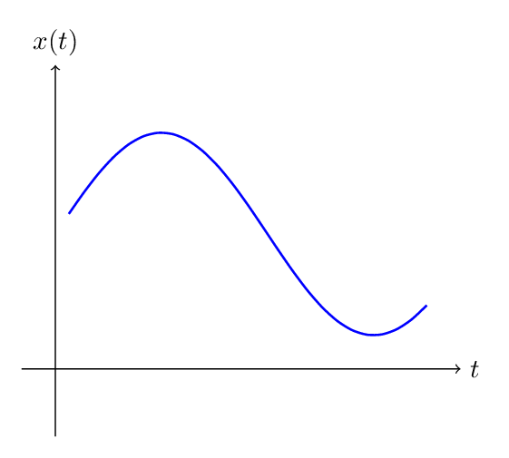
-
À quel(s) instant(s) la vitesse est-elle nulle ?
-
Indiquez les intervalles où le mouvement est accéléré ou ralenti.
-
Que peut-on dire de l’accélération au point où la courbe atteint un maximum ?
Mouvement rectiligne
Un point matériel suit un mouvement donné par :
-
Calculez la vitesse \(v(t)\) et l’accélération \(a(t)\).
-
Déterminez l’instant où la vitesse est nulle.
-
Le mouvement est-il accéléré ou ralenti à cet instant ?
Correction :
Chute verticale
Un objet est lancé verticalement vers le haut avec une vitesse initiale \(v_0 = 20\ \text{m/s}\), depuis une hauteur \(x_0 = 10\ \text{m}\). On néglige les frottements.
-
Écrivez l’expression de \(x(t)\).
-
À quel instant l’objet atteint-il son point le plus haut ?
-
Quelle est sa hauteur maximale ?
-
À quel instant touche-t-il le sol ?
Correction :
Oscillateur harmonique
Un objet est attaché à un ressort. Sa position est donnée par :
avec \(A = 5\ \text{cm}\) et \(\omega = 2\ \text{rad/s}\).
-
Calculez la vitesse \(v(t)\) et l’accélération \(a(t)\).
-
Quelle est la valeur maximale de la vitesse ? de l’accélération ?
-
Interprétez physiquement ces résultats.
Correction :
Loi de refroidissement de Newton (niveau plus avancé)
Un objet chaud est plongé dans un bain thermique à température constante \(T_{\text{env}} = 20^\circ\)C. Sa température \(T(t)\) évolue selon :
-
Vérifiez que \(T(t) = T_{\text{env}} + (T_0 - T_{\text{env}})e^{-kt}\) est solution.
-
Que vaut \(\dv{T}{t}\) lorsque \(T = T_{\text{env}}\) ?
-
Interprétez la constante \(k\) physiquement.
Intégrales et applications en physique
Motivation : pourquoi intégrer ?
En physique, de nombreuses grandeurs ne peuvent pas être calculées directement à un instant donné, mais plutôt par une accumulation de quantités élémentaires : longueur, énergie, masse, charge, travail, etc.
L'intégrale permet justement de faire cette somme continue.
Définition intuitive
Soit une fonction continue \(f(t)\) définie sur un intervalle \([a, b]\). On peut approximer l’aire sous la courbe par une somme de rectangles :
Quand \(n \to \infty\) et \(\Delta t \to 0\), cette somme devient l’intégrale définie :
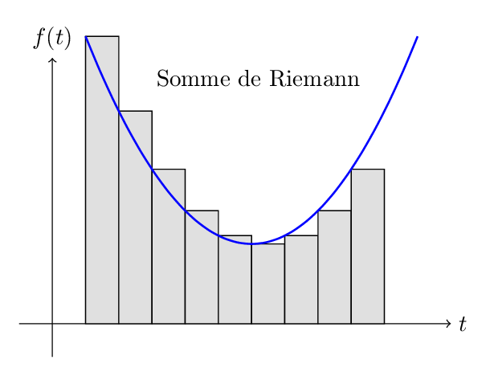
Interprétation géométrique
L’intégrale \(\displaystyle \int_a^b f(t)\,dt\) représente l’aire algébrique entre la courbe \(y = f(t)\) et l’axe des abscisses, entre \(t = a\) et \(t = b\).
Si \(f(t) \geq 0\) sur l’intervalle, alors cette aire est positive.
Exemples physiques classiques
1. Position et vitesse
Si \(v(t)\) est la vitesse d’un objet, alors la position est donnée par :
2. Travail d’une force variable
Le travail d’une force \(F(x)\) entre \(x = a\) et \(x = b\) est donné par :
3. Quantité de chaleur reçue
Si un corps reçoit de l’énergie à un débit \(P(t)\) (puissance), alors l’énergie reçue entre \(t_1\) et \(t_2\) est :
4. Charge électrique sur une surface
Si la densité de charge est \(\sigma(x)\) (en C/m²), la charge totale sur une plaque de longueur \(L\) est :
Unités et interprétation dimensionnelle
Si \(f(t)\) a pour unité [U] et \(t\) pour unité [T], alors :
Théorème fondamental du calcul intégral
Si \(F\) est une primitive de \(f\), alors :
Ce résultat permet de relier intégrale et dérivée. L'intégrale de borne supérieur indéfinie est écrite comme
La différence infinitésimal de la fonction \(F(x)\) s'exprime comme
En prenant la limite quand \(\Delta x \to 0\) nous avons
et cela implique
ce qui fait que l'intégrale soit l'opération inverse à la dérivée.
Pour une fonction monôme du type
sa dérivée est donné par
pour que nous puissions obtenir sa primitive, nous prenons l'opération inverse. De manière générale, l'intégrale d'une fonction monôme quelconque est donné par
Les propriétés des intégrales:
Étant donnés une fonction \(f(x)\) définie comme \(f:x\mapsto\mathbb{R}\) et une constante quelconque \(k\)
-
L'intégrale d'une fonction quelconque multipliée par une constante arbitraire \(k\) est égal a la constante multiplié par l'intégrale de la fonction
\[\begin{gathered}\int^x k\,f(x')\,dx'=k\,\int^x f(x')\,dx'\end{gathered}\](94) -
L'intégrale est une opération linéaire
\[\begin{gathered}\int^{x}(f(x')+g(x'))\,dx'=\int^x f(x')\,dx'+\int^x g(x')\,dx'\end{gathered}\](95) -
Intégration par changement de variable
\[\begin{gathered}\int^{\varphi(t)} f(x')\,dx'=\int^{t} f(\varphi(t))\frac{d\varphi}{dt}\,dt~\end{gathered}\](96)où \(\varphi(t)=x\) et \(dx=\frac{d\varphi}{dt}dt\).
-
L'intégrale par partie
\[\begin{gathered}\int_{a}^{b} u\,v'\,dx=u\,v\,\Big|_a^b-\int_{a}^{b}v\,u'\,dx ~.\end{gathered}\](97)
Exercices d’application
Distance parcourue
Un objet se déplace avec une vitesse donnée par \(v(t) = 2t\), avec \(t\) en secondes, \(v\) en m/s.
-
Calculez la distance parcourue entre \(t = 0\) et \(t = 5\).
-
Interprétez le résultat géométriquement.
Correction :
Travail d’une force
Une force \(F(x) = 3x^2\) agit sur un objet, \(x\) en mètres, \(F\) en N. Calculez le travail de \(x = 0\) à \(x = 2\).
Correction :
Aire algébrique
On considère la fonction \(f(x) = x\) sur l’intervalle \([-1, 1]\).
-
Calculez \(\int_{-1}^1 x\,dx\)
-
Calculez \(\int_0^1 x\,dx\) et \(\int_{-1}^0 x\,dx\)
-
Interprétez la différence entre les deux résultats
Correction :
Somme approchée
Soit \(f(t) = t^2\) sur \([0,2]\). Approchez \(\int_0^2 f(t)\,dt\) en divisant \([0,2]\) en 4 intervalles, et en prenant pour chaque sous-intervalle la valeur de \(f\) au point gauche.
Correction :
Valeur exacte :
Introduction : Pourquoi des équations différentielles ?
Une équation différentielle exprime une loi physique fondamentale reliant une grandeur physique à sa variation dans le temps (ou dans l’espace).
-
Exemples :
-
Vitesse : \(v(t) = \dfrac{dx(t)}{dt}\)
-
Accélération : \(a(t) = \dfrac{d^2x(t)}{dt^2}\)
-
Loi de Newton : \(m \dfrac{d^2x}{dt^2} = F(x, v, t)\)
-
Équations différentielles d’ordre 1 à variables séparables
Forme générale :
Si les variables sont séparables c'est possible de traité la dérivée algebriquement comme un rapport :
Exemple : Refroidissement de Newton
Solution :
Remarque pédagogique : Peut-on manipuler les différentielles ?
Rigueur mathématique : la dérivée \(\dfrac{dy}{dt}\) est une limite, pas une fraction. Mais dans un cadre intégral, on peut écrire :
Et ensuite intégrer des deux côtés :
Ce n’est donc pas une manipulation algébrique naïve, mais une méthode rigoureuse fondée sur le calcul intégral.
Limites de la méthode de séparation des variables
La méthode ne s’applique pas quand les variables \(y\) et \(t\) sont mélangées dans une même fonction de manière inséparable.
-
Exemple 1 : \( \dfrac{dy}{dt} = y + t \) — dépendance mixte : non séparable.
-
Exemple 2 : \( \dfrac{dy}{dt} = \sin(t + y) \) — fonction non factorisable.
-
Exemple 3 : \( \dfrac{dy}{dt} = ty^2 + \ln(y) \) — dépendance non isolable.
Dans ces cas, on utilise d’autres méthodes : facteur intégrant, substitution, résolution numérique…
Équations différentielles linéaires d’ordre 1
Forme :
Exemple : Circuit RC
Équations différentielles d’ordre 2
Forme générale :
Oscillateur harmonique libre
Oscillateur amorti
Oscillateur forcé
Équations différentielles en physique
Radioactivité
L’évolution d’un nombre de noyaux radioactifs est donnée par :
-
Résoudre l’équation avec \(N(0) = N_0\).
-
Tracer la courbe \(N(t)\).
-
Déterminer le temps de demi-vie.
Chute avec frottement
Un objet de masse \(m\) est soumis à la gravité et à une force de frottement proportionnelle à sa vitesse :
-
Résoudre l’équation pour \(v(0) = 0\).
-
Quelle est la vitesse limite ?
Oscillateur harmonique
-
Trouver la solution générale.
-
Discuter le comportement temporel du système.
Refroidissement de Newton
-
Résoudre l’équation avec \(T(0) = T_0\).
-
Représenter graphiquement \(T(t)\).
Circuit RC
Un condensateur de capacité \(C\) est branché en série avec une résistance \(R\) et une source constante \(V\) :
-
Résoudre avec \(q(0) = 0\).
-
Représenter \(q(t)\) et \(i(t) = \dfrac{dq}{dt}\).
Vecteurs et ses opérations (2 séances)
Un vecteur est une grandeur mathématique définie par :
-
une direction,
-
un sens,
-
une norme (ou longueur).
On le note généralement en gras ou avec une flèche : \(\vec{A}\), \(\vec{v}\), etc. Un vecteur dans l’espace peut être représenté par ses composantes :
où \(\vec{i}, \vec{j}, \vec{k}\) sont les vecteurs unitaires des axes \(x\), \(y\) et \(z\). Une autre possibilité est de définir les vecteurs unitaires comme \(\vec{e}_x\), \(\vec{e}_y\) et \(\vec{e}_z\).
Opérations vectorielles
Somme et multiplication par un scalaire
-
\(\vec{C} = \vec{A} + \vec{B}\) : addition composante par composante.
-
\(\lambda \vec{A}\) : multiplie la norme du vecteur par \(\lambda\), et inverse son sens si \(\lambda < 0\).
Addition et soustraction des vecteurs
Définition géométrique
-
Addition : Pour deux vecteurs \(\vec{u}\) et \(\vec{v}\), leur somme \(\vec{u} + \vec{v}\) est obtenue en plaçant l’origine de \(\vec{v}\) à l’extrémité de \(\vec{u}\) (règle du parallélogramme).
-
Soustraction : La différence \(\vec{u} - \vec{v}\) correspond à l’addition de \(\vec{u}\) avec l’opposé de \(\vec{v}\) :
\[\vec{u} - \vec{v} = \vec{u} + (-\vec{v})\](121) -
L’opposé \(-\vec{v}\) est le vecteur de même direction, de sens opposé, et de même norme que \(\vec{v}\).
Coordonnées cartésiennes
Si \(\vec{u} = (u_x, u_y)\) et \(\vec{v} = (v_x, v_y)\) dans un plan, alors :
ATTENTION/ Les vecteurs peuvent glisser librement dans l’espace à condition qu’ils ne changent pas de direction ou de taille.
Représentation graphique
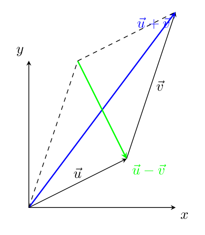
Applications en physique
-
Addition de forces (principe de superposition)
-
Décomposition du mouvement (ex. vitesse résultante)
Produit scalaire (dot product)
Le produit scalaire de deux vecteurs \(\vec{A}\) et \(\vec{B}\) est une opérations mathématique de projection d'une vecteur sur l'autre en les emmenant à un scalaire représentée :
où \(\theta\) est l’angle entre \(\vec{A}\) et \(\vec{B}\).
Propriétés :
-
Symétrie : \(\vec{A} \cdot \vec{B} = \vec{B} \cdot \vec{A}\)
-
Linéarité : \(\vec{A} \cdot (\vec{B} + \vec{C}) = \vec{A} \cdot \vec{B} + \vec{A} \cdot \vec{C}\)
-
\(\vec{A} \cdot \vec{A} = \norm{\vec{A}}^2\)
Dans la fig.12 nous montrons la projection \(B_A\) i.e., la projection du vecteur \(\vec{B}\) sur le vecteur \(\vec{A}\) donnée par \(B_A=|\vec{B}|\cos\theta\). Puisque la projection se trouve selon la même direction du vecteur \(\vec{A}\) nous pouvons simplement multiplier les projections \(\vec{A}\cdot\vec{B}=|\vec{A}||\vec{B}|\cos\theta=B_A\,|\vec{A}|\).
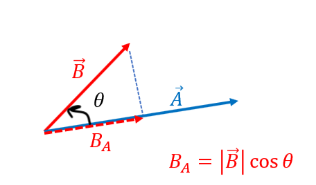
Au lieu de projeter le vecteur \(\vec{B}\) sur \(\vec{A}\) nous pouvons projeter \(\vec{A}\) sur \(\vec{B}\).(Regardez la fig. 13 ). Cela correspond à \(\vec{A}\cdot\vec{B}=|\vec{A}||\vec{B}|\cos\theta=A_B\,|\vec{B}|\).
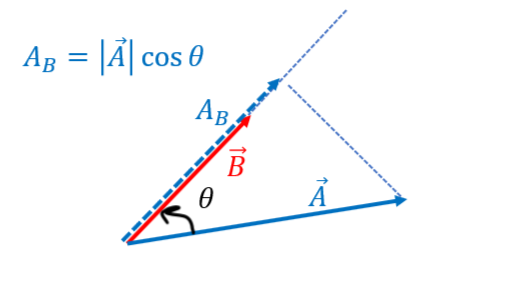
Algébriquement un vecteur peut être écrit en termes des ses vecteurs de base
Le produit scalaire entre deux vecteurs est
Ci-dessus nous avons utilisé orthogonalité du produit scalaire.
Pour les vecteur bidimensionnelles \(\vec{A}=a_x\,\vec{e}_x+a_y\,\vec{e}_y\) et \(\vec{B}=b_x\,\vec{e}_x+b_y\,\vec{e}_y\) montrez que le produit scalaire peut s'écrire comme \(a_x\,b_x+a_y\,b_y=|\vec{A}||\vec{B}|\cos\theta\).
Exercices de révision
Calculez les produit scalaires \(\vec{A}\cdot\vec{B}\) des vecteurs suivants:
-
\(\vec{e}_x\cdot\vec{e}_x\)
-
\(\vec{e}_x\cdot\vec{e}_y\)
-
\(\vec{e}_x\cdot\vec{e}_z\)
-
\(\vec{e}_y\cdot\vec{e}_y\)
-
\(\vec{e}_y\cdot\vec{e}_z\)
-
\(\vec{A}=(3,~5) ~~~\vec{B}=(5,1)\)
-
\(\vec{A}=(0,~1) ~~~\vec{B}=(-3,2)\)
-
\(\vec{A}=2\,\vec{e}_x-3\,\vec{e}_y ~~~\vec{B}=5\,\vec{e}_x+2\,\vec{e}_y\)
-
\(\vec{A}=2\,\vec{e}_y ~~~\vec{B}=5\,\vec{e}_x\)
-
\(\vec{A}=2\,\vec{e}_x+2\,\vec{e}_y ~~~\vec{B}=5\,\vec{e}_x\)
-
\(\vec{A}=2\hat{x}+2\hat{y} ~~~\vec{B}=-2\hat{x}+2\hat{y}\)
Application physique : Le travail d'une force est définit par un produit scalaire de la force et le déplacement :
où \(\vec{F}\) est une force et \(\vec{d}\) un déplacement.
Le produit vectorielle
Auparavant, nous avons défini une opération qui transforme deux vecteurs en un scalaire, qui c'est la projection d'un vecteur sur l'autre. Maintenant, nous définissons une opérations qui transforme deux vecteur en un vecteur perpendiculaire au plan formé par ces deux vecteurs d'origine \(\vec{A}\) et \(\vec{B}\)
où le vecteur unitaire \(\hat{n}\) est perpendiculaire au plan formé par les vecteurs \(\vec{A}\) et \(\vec{B}\). Le deux vecteurs forment un angle \(\theta\). Différemment du produit scalaire, l'ordre du produit vectorielle joue un rôle important changent le signe de l'opération. Puisque l'angle \(\theta\) est définit à partir de \(A\) vers \(B\), si on change l'ordre de l'opération \(\vec{B}\wedge\vec{A}\) , nous changeons la direction de cet angle \(\theta\to-\theta\) ce qu'implique \(\sin \theta\to\sin (-\theta)=-\sin (\theta)\). Comme résultat,
Dans la fig. 14 nous représentons deux vecteurs arbitraires \(\vec{A}\) et \(\vec{B}\) définis sur le plan \(x-y\) et un axe \(z\) perpendiculaire au plan avec un vecteur \(\vec{C}\).
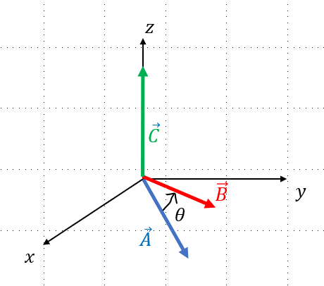
Dans la fig. 15 nous représentons deux vecteurs arbitraires \(\vec{A}\) et \(\vec{B}\) définis sur le plan x-y. Notez que la projection du vecteur \(\vec{A}\) perpendiculairement au vecteur \(\vec{B}\) nous permets d'obtenir le vecteur \(\vec{D}\).
en multiplient la norme \(|\vec{D}|\) par la norme \(|\vec{B}|\) nous obtenons
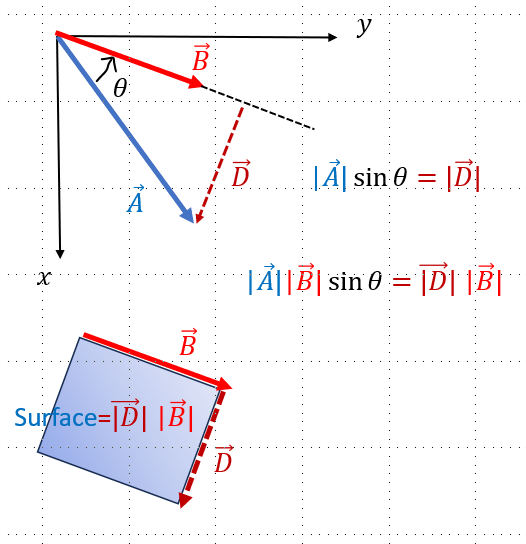
Dans la fig. 16 nous représentons deux vecteurs \(\vec{A}\) et \(\vec{B}\) définis sur le plan x-y. Comme auparavant, la projection du vecteur \(\vec{B}\) perpendiculairement au vecteur \(\vec{A}\) nous permet d'obtenir un vecteur \(\vec{E}\).
et si nous le multiplions par la norme \(|\vec{A}|\) nous obtenons
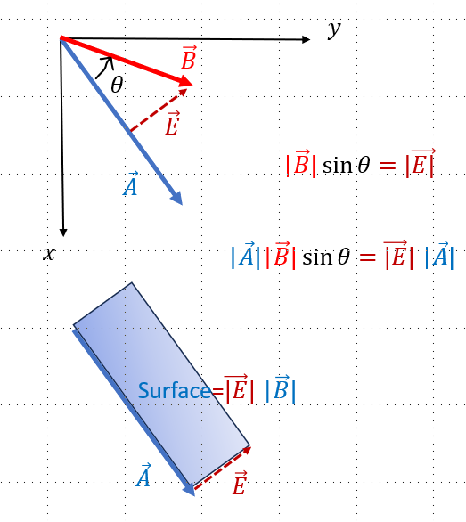
Nous concluons que \(|\vec{A}||\vec{E}|=|\vec{B}||\vec{D}|=|\vec{C}|\). Nous pouvons interpréter le produit vectorielle comme l'aire du losange crée par les deux vecteurs orientée perpendiculairement au plan formé par eux.
Notez que le produit vectorielle nous oblige à inclure une troisième dimension spatial.
On suppose deux vecteurs quelconque
algébriquement nous définissons le produit vectorielle comme le déterminant
Conformément à l'exemple antérieur, prenons les composantes \(A_z=B_z=0\), alors le produit vectorielle devient
Exercices d’entraînement
Démontrez que \(\Big(A_x B_y-A_y B_x\Big)=C\).
Calculate the cross products below:
-
\(\hat{x}\times\hat{x}=\)
-
\(\hat{y}\times\hat{y}=\)
-
\(\hat{z}\times\hat{z}=\)
-
\(\hat{x}\times\hat{y}=\)
-
\(\hat{x}\times\hat{z}=\)
-
\(\hat{z}\times\hat{y}=\)
Calculate the cross product between the two vectors:
-
\(\vec{A}=(3,~5) ~~~\vec{B}=(5,1)\)
-
\(\vec{A}=(0,~1) ~~~\vec{B}=(-3,2)\)
-
\(\vec{A}=2\,\vec{e}_x-3\,\vec{e}_y ~~~\vec{B}=5\,\vec{e}_x+2\,\vec{e}_y\)
-
\(\vec{A}=2\,\vec{e}_y ~~~\vec{B}=5\,\vec{e}_x\)
-
\(\vec{A}=2\,\vec{e}_x+2\,\vec{e}_y ~~~\vec{B}=5\,\vec{e}_x\)
-
\(\vec{A}=2\hat{x}+2\hat{y} ~~~\vec{B}=-2\hat{x}+2\hat{y}\)
Applications :
-
Moment d’une force : \(\vec{M} = \vec{r} \times \vec{F}\)
-
Champ magnétique : force de Lorentz : \(\vec{F} = q\vec{v} \times \vec{B}\)
Produit mixte (triple produit scalaire)
Le produit mixte est défini par :
C’est un scalaire qui représente le volume orienté du parallélépipède défini par les trois vecteurs.
Propriétés :
-
\(\vec{A} \cdot (\vec{B} \times \vec{C}) = \vec{B} \cdot (\vec{C} \times \vec{A}) = \vec{C} \cdot (\vec{A} \times \vec{B})\)
-
Nul si les vecteurs sont coplanaires.
Applications physiques
3.1 Travail d'une force
Le travail est maximal quand la force est colinéaire au déplacement.
Moment d'une force
Le moment exprime la tendance d’une force à faire tourner un corps autour d’un point.
Volume
Utilisé en géométrie vectorielle et en mécanique pour décrire des volumes.
Exercices
-
Calculer le produit scalaire de \(\vec{A} = (2, -1, 3)\) et \(\vec{B} = (1, 4, -2)\).
-
Calculer le produit vectoriel de \(\vec{u} = (1, 0, 2)\) et \(\vec{v} = (0, 3, -1)\).
-
Montrer que \(\vec{A} \cdot (\vec{B} \times \vec{C}) = 0\) si les vecteurs sont coplanaires.
-
Une force \(\vec{F} = (5, 0, 0)\,\text{N}\) agit sur un objet qui se déplace de \(\vec{d} = (4, 3, 0)\,\text{m}\). Calculer le travail effectué.
-
Soit une force \(\vec{F} = (0, 5, 0)\) appliquée à un point situé en \(\vec{r} = (2, 0, 0)\). Calculer le moment \(\vec{M} = \vec{r} \times \vec{F}\).